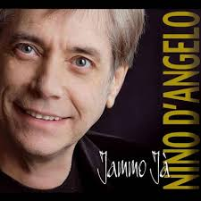
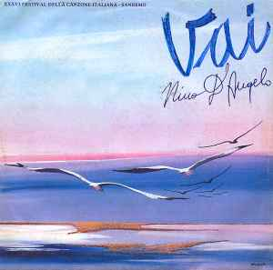
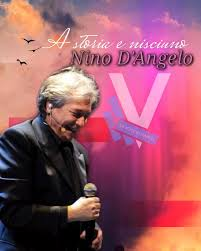

Biografia
Nino D'Angelo è un famoso cantautore, attore e regista italiano nato a San Pietro a Patierno, quartiere di Napoli, nel 1957. È noto per il suo contributo alla musica popolare napoletana, conosciuta anche come "neomelodica". La sua carriera artistica è caratterizzata da una vasta produzione di canzoni che spaziano tra vari generi, inclusi il pop, la musica leggera e il melodramma. Le sue canzoni sono spesso ispirate alle esperienze di vita quotidiana, trattando temi come l'amore, l'amicizia, la famiglia e la città di Napoli. Nino D'Angelo ha ottenuto un grande successo sia a livello nazionale che internazionale, diventando un'icona della cultura popolare napoletana e continuando a essere amato dal suo vasto pubblico per la sua autenticità e la sua voce appassionata. Oltre alla sua carriera musicale, ha anche recitato in numerosi film e produzioni teatrali, mostrando la sua versatilità artistica in vari ambiti dello spettacolo.
 Jammo Ja'
"Jammo Ja'" è una canzone popolare di Nino D'Angelo che celebra il senso di appartenenza e l'orgoglio per la propria terra, Napoli. Il testo esprime la bellezza e l'unicità della città, con una melodia coinvolgente che invita l'ascoltatore a immergersi nell'atmosfera vibrante e vivace di Napoli.
 Vai
"Vai" è una canzone romantica di Nino D'Angelo che parla di un amore travolgente e passionale. Il testo descrive l'intensità dei sentimenti amorosi, esortando l'amato a seguirlo in un viaggio verso un futuro luminoso e pieno di speranza.
 A Storia e Nisciuno
"A Storia 'E Nisciuno" è una canzone che riflette sulle difficoltà e sulle gioie della vita quotidiana. Il testo affronta temi universali come l'amore, l'amicizia, la perdita e la speranza, narrando storie di persone comuni che lottano per trovare il loro posto nel mondo. La melodia malinconica e le parole toccanti di Nino D'Angelo trasmettono un senso di nostalgia e autenticità.
Nino D'Angelo incarna l'anima della musica napoletana con una passione contagiosa e una voce che tocca il cuore. Con la sua autenticità e il suo talento innato, ha conquistato generazioni di ascoltatori, trasmettendo emozioni sincere attraverso le sue canzoni. Il suo contributo alla cultura popolare italiana è immenso, e il suo impatto rimarrà inciso nella storia della musica per sempre.
Scopri di più su Nino D'angelo